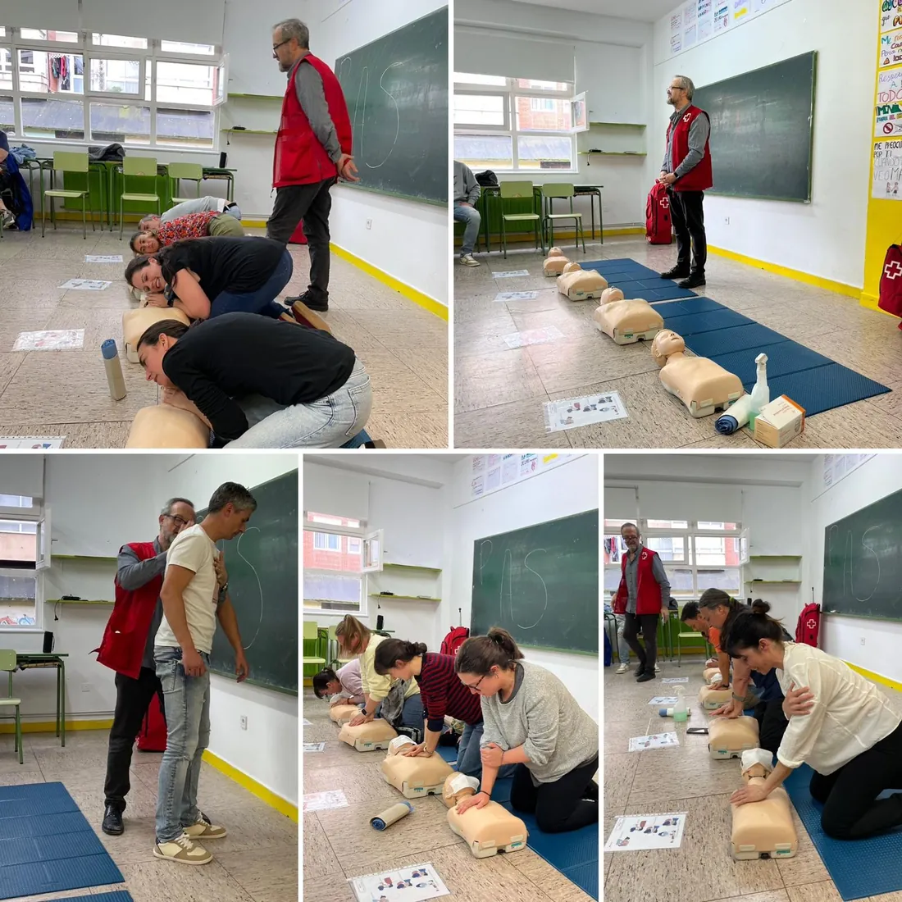

18 € al año por familia
No por cada hijo: por familia. Esto es exactamente lo que se hace con ese dinero y lo que recibe tu familia a cambio, con las cifras del curso pasado.
Con una sola actividad ya la has recuperado
En junio de 2026 la AFA organizó una ludoteca para las tardes no lectivas. Costaba 35 € para las familias asociadas y 55 € para las que no lo eran.
Son 20 € de diferencia en una sola inscripción. La cuota entera cuesta 18 €. Si tu familia usa la ludoteca un solo mes, ya has pagado la cuota del año y te sobran dos euros.
Y la ludoteca no es un caso raro: es el modelo. Cuando la AFA contrata un servicio, la cuota de los socios es lo que permite subvencionarlo. Ese junio la asociación puso 360 € de su propio fondo para que el precio bajara.
Lo que dio de sí el curso 2025–2026
Ocho actividades entre diciembre de 2025 y junio de 2026, con la cuota de 187 familias asociadas. Todas las cifras salen de las actas de la asamblea.
Qué te llevas por ser socio
Precio reducido en los servicios de pago
Es la ventaja más tangible. En la ludoteca fueron 35 € frente a 55 €. Cualquier servicio que la AFA contrate en el futuro seguirá esa lógica: los socios pagan menos porque su cuota es lo que subvenciona la diferencia.
Prioridad cuando hay aforo limitado
En los talleres con plazas contadas —el de primeros auxilios de Cruz Roja se llenó— las familias asociadas entran primero.
Voz y voto en la asamblea
Esto no es un extra decorativo. En la asamblea se aprueban las cuentas, se decide qué actividades se hacen y se elige la junta. Un socio decide; alguien que no lo es, no.

Las formaciones para familias
Los tres talleres del curso pasado fueron gratuitos y salieron adelante porque hay una asociación que los organiza y que tiene un fondo para cubrir lo que haga falta.
Y lo que no tiene precio
Que exista alguien que hable con la dirección del colegio en nombre de las familias, que participe en el Consejo Escolar y que organice el Carnaval. Eso funciona con dos cosas: dinero y manos. La cuota es la parte fácil.
De dónde salen estos números
De las actas de las asambleas generales, que puedes descargar en la página de documentación. La del 29 de mayo de 2026 recoge el detalle de las ocho actividades y el estado de cuentas.
Si algo de esta página no te cuadra con lo que dicen las actas, escríbenos y lo corregimos. Preferimos una web incómoda y exacta a una cómoda y aproximada.